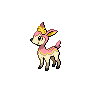

📖 英語版の図鑑説明
The turning of the seasons changes the color and scent of this Pokémon’s fur. People use it to mark the seasons.
日本語訳
季節の変わり目に毛皮の色と匂いが変わる。“季節の訪れを告げる存在”として親しまれる。
📝 この図鑑文に出てくる英単語
| 英単語 | 意味 | 品詞 | レベル |
|---|---|---|---|
| turning | 変わっている、回している | 動詞 | 中2 |
| seasons | 季節(複数形) | 名詞 | 中1 |
| changes | 変える | 動詞 | 中2 |
| scent | におい | 名詞 | 大学 |
| mark | 印 | 名詞 | 中3 |
文法ポイント to mark は「〜するために」と目的を表す不定詞です。
💡 英語名「Deerling」の由来
英語名「Deerling」は、deer（シカ）、darling（いとしい人）、yearling（1歳の動物）とimmature（未熟な）を組み合わせた名前と考えられている。フランス語の名前は「Vivaldaim」で、Vivaldi（『四季』の作曲家ヴィヴァルディ）、daim（ダマジカ）から作られている。
出典 Bulbapedia
📊 シキジカの種族値
HP60
こうげき60
ぼうぎょ50
とくこう40
とくぼう50
すばやさ75
合計 335
❓ よくある質問
- シキジカの英語名は？
- シキジカの英語名は「Deerling」です。
- シキジカの英語名「Deerling」の由来は？
- 英語名「Deerling」は、deer（シカ）、darling（いとしい人）、yearling（1歳の動物）とimmature（未熟な）を組み合わせた名前と考えられている。フランス語の名前は「Vivaldaim」で、Vivaldi（『四季』の作曲家ヴィヴァルディ）、daim（ダマジカ）から作られている。
- シキジカは英語版の図鑑でどう説明されている？
- 「The turning of the seasons changes the color and scent of this Pokémon’s fur. People use it to mark the seasons.」と書かれています。日本語にすると「季節の変わり目に毛皮の色と匂いが変わる。“季節の訪れを告げる存在”として親しまれる。」という意味です。
シキジカは第5世代（イッシュ地方）のポケモンです。第5世代（イッシュ地方）の英語名一覧 →